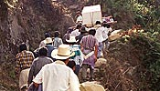
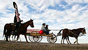

Man says he might have seen Karr in '96
Todd Hartman, Rocky Mountain News
Published August 26, 2006 at midnight
Boulder District Attorney investigator Mark Spray has contacted a man who believes he could have encountered the JonBenet Ramsey murder suspect on a bus in the early morning hours of Dec. 26, 1996.
Daniel Pride, now of Portsmouth, N.H., said he was at the downtown bus station in Boulder sometime shortly after 12:30 a.m. when a man arrived, behaving strangely and bearing a resemblance to John Mark Karr, arrested last week in the case.
He said the man didn't want to be noticed and pulled away when Pride asked if he had a light for a cigarette. The man boarded the same bus as Pride, and exchanged strange glances with him once aboard, Pride said.
Pride said the individual was wearing a Western fleece vest with a "shiny red spot" that Pride took to be a stain.
Asked how he could remember the event in such detail, Pride said it was because the man acted so strangely, and because he found out about JonBenet's death soon after. At some point after the murder, Pride said he called the tip into Boulder police.
Pride decided to again leave his tip with the DA's office Aug. 18. Spray contacted him five days later, and interviewed him over the phone, Pride said.
Pride provided an e-mail from Spray in which the investigator said he was interested in talking to him. Spray wanted to know what Pride was wearing on the same night, said Pride, who said he thought he could obtain the information from friends who had photos of a gathering that Pride attended on Christmas of 1996.
It's impossible to know the significance of the interview. Those familiar with investigations said Spray could simply be following a lead that could put Karr in Boulder, or might have been trying to corroborate information that he'd already obtained elsewhere.
Pride said the stranger got off the bus on the highway outside of Boulder.
Pride's story seems to have at least one hitch: The Ramsey house is some distance from the downtown Boulder bus station. Even if JonBenet's death occurred prior to midnight - the exact time is unknown - it's a significant walk from that property on 15th Street to the bus depot.

Featured
-
DNC in Denver
Complete coverage of the 2008 Democratic National Convention.
-
The Crevasse
A five-part series that examines one tragic day on Mount Rainier.
-
Deadly denial
Sick nuclear workers applied for government compensation but most haven't seen a dime.
-
Final Salute
The Rocky followed Maj. Steve Beck as he took on the most difficult duty of his career.
-
'Colorado's burning'
Coverage of the state's worst wildfires.
-
Columbine shootings
Coverage of the April 20, 1999, shootings at Littleton's Columbine High School.
-
The Crossing
Colorado's deadliest traffic accident killed 20 children on Dec. 14, 1961.
-
Osveli's journey
Osveli Sales left Guatemala for a better life. Two months later, he came home in a box.
-
Wake for an Indian warrior
Oglala Sioux bestow a tribute to the first tribal fatality in Iraq.
Post your comment
Registration is required. Click here to create your free user account, or login below.
Comments are the sole responsibility of the person posting them. You agree not to post comments that are off topic, defamatory, obscene, abusive, threatening or an invasion of privacy. Violators may be banned. Click here for our full user agreement.